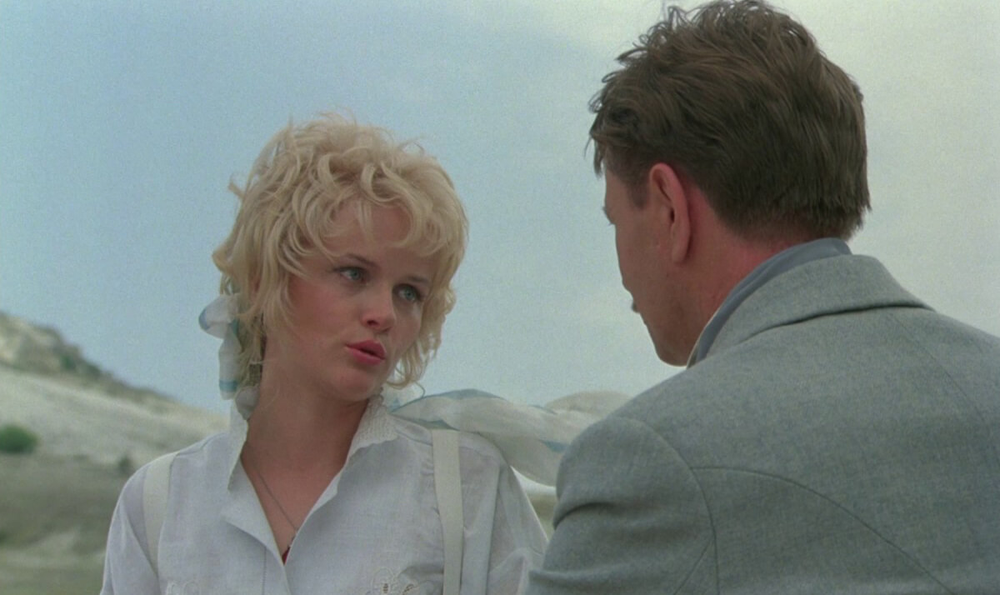

В кинофильме «Человек с бульвара Капуцинов» белокурая Диана Литтл наивно говорит главному герою Джону Фёрсту: «Джонни, сделай монтаж». Влюблённая девушка, недавно познакомившаяся с чудом синематографа, просит Джона сократить расстояние от первого поцелуя до празднования свадьбы и появления детей. Джонни впадает в ступор от нелепости запроса, но простодушие Дианы не может вызывать ничего, кроме умиления. В реальном мире нет монтажа, к результатам мы приходим шаг за шагом, будто проходя по лестнице ступень за ступенью. Иногда можно перешагнуть сразу через несколько, но для этого требуется больше усилий. Изучая новое, пробуя использовать неизвестные ранее инструменты, невозможно обойтись без рутины. Чтобы изучить что-то, необходимо повторение, прилаживание изученного к разным контекстам. Никакого монтажа не будет. Впереди только равномерное исследование, в котором нужно научиться находить прелесть открытий.